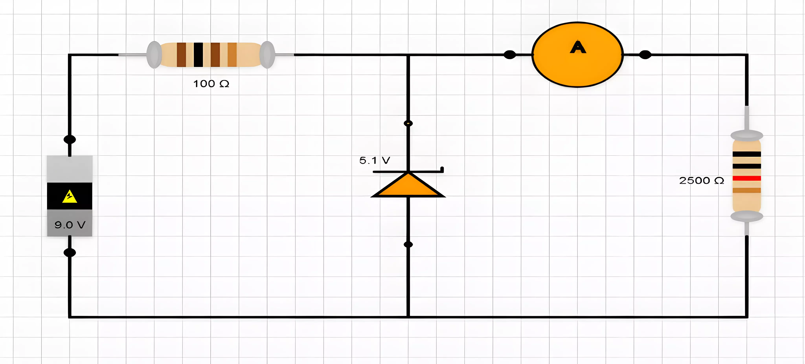

Follow the steps below to understand and perform the Zener Diode Simulation effectively.
Procedure to Use the Zener Diode Circuit Simulation
Step 1 - Circuit To Be Constructed:

Step 2 - Constructing the Circuit:
Begin by navigating to the drag-and-drop canvas, which allows you to build your circuit.
The canvas is equipped with a set of components available in the form of buttons. These components include
resistors, load resistors, Zener diodes, voltage sources, and wires.
To add a component to the canvas, simply click on the desired button. The component will appear on the
canvas, where you can place and arrange it as required to create your circuit.
Use the wires to connect the components by dragging and dropping them between the component terminals.
Step 3 - Input Section:
Once your circuit is set up, move to the Input Section located below the canvas.
Here, you can enter the required values for the components in your circuit:
Input Voltage: The voltage value applied to the circuit.
Resistor Value: The value of the resistor in the circuit.
Load Resistor Value: The value of the load resistor.
Zener Diode Value: The value of Zener Diode to be used for Simulation.
After entering the necessary values, click on the Calculate button to perform the calculations based on the
entered values.
Step 4 - Result Section:
Upon clicking Calculate, the results will be displayed in the Result Section on the right side.
The results will include important calculations such as Zener Voltage, Zener Current, Load Voltage, and Load
Current.
These results will provide key insights into the behavior of the Zener Diode circuit based on your input
values.
Step 5 - Observation Table:
Below the result section, you’ll find the Observation Table. This table allows you to keep track of multiple
experiments by adding different sets of input values and their corresponding results.
To add the current results to the table, simply click the Add to Table button located in the result section.
The results will be added to the table, where you can see the relationship between different values and the
outcomes of each experiment.
Step 6 - Graph Section:
After you have accumulated several sets of data in the observation table, you can visualize the results by
plotting them on a graph.
Click on the Plot Graph button, and a graph will be generated in the Graph Section to help you analyze
trends and relationships between the variables, such as Zener Voltage vs. Zener Current.
Simulation Tutorial:
By following these steps, users can construct a circuit, perform calculations, track observations, and
visualize data, making this simulation an effective tool for understanding Zener Diode circuits.